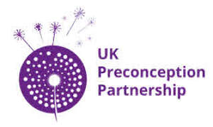

Trade Mark Journal No.2025/039 26 September 2025
UK00004264923 16 September 2025 (35,41,42,44)

- Class 35
- Opinion polling; Health care cost management; Administrative management of health care clinics; Management of health care clinics for others; Health care cost review; Market research studies; Marketing research; Marketing research or analysis; Commercial information research studies; Market research and marketing studies; Market research and analysis; Advertising research; Consumer research; Conducting of market research; Market research data analysis.
- Class 41
- Education services relating to health; Health education; Physical health education; Education; Education in the field of occupational health and safety; Education and training services in the field of occupational health and safety; Education and training in the field of occupational health and safety; Health and wellness training; Medical education services; Provision of educational health and fitness information; Health club services [health and fitness training]; Physical fitness education services; Physical education; Education services relating to nutrition; Physical education services; Dietary education services; Providing of training in the field of health care and nutrition; Provision of physical education; Teaching of diet education; University education services; Education services relating to physical fitness; Health and fitness training; Education services relating to medicine; Adult education services relating to medicine; Training services relating to health and safety; Services of schools [education]; Primary education services; Education and training; Vocational education relating to personal safety; Training and education services; Education and training services; Provision of educational services relating to health; Vocational education relating to avoidance of health related problems; Primary education services relating to literacy; Educational services in the healthcare sector; Adult education services; Education services relating to hygiene; Higher education services; Management of education services; Vocational education and training services; Academy services (Education -); Education academy services; Academy education services; Educational and training services relating to healthcare; Career counseling [education]; Education services relating to the development of childrens' mental faculties; Adult education services relating to pharmacy; Health club services; Technological education services; Education information; Education services relating to pharmacy; Information (Education -); Education services relating to food technology; Education services relating to vocational training; Provision of training and education; Provision of education and training; Health club [fitness] services; Physical education facilities (Provision of -); Education and instruction services; Educational services for providing courses of education; Providing continuing medical education courses; Physical education instruction; Education information services; Health club services [exercise]; Entertainment, education and instruction services.
- Class 42
- Biological research, clinical research and medical research; Medical research; Biomedical research services; Medical research services; Medical research laboratory services; Scientific research services; Clinical research; Scientific research in the field of social medicine; Scientific research for medical purposes; Medical and pharmacological research services; Scientific research and development; Research (Scientific -); Scientific research; Dental research laboratory services; Food research; Analysis of human serum for medical research; Pharmaceutical research services; Providing medical and scientific research information in the field of pharmaceuticals and clinical trials; Biochemistry research services; Biotechnology research; Scientific research relating to genetics; Research services; Biological research laboratory services; Biological research services; Research relating to medicine; Scientific research in the field of pharmacy; Scientific research in the field of genetics; Laboratory research; Genetic research; Scientific research and analysis; Advisory services relating to scientific research; Biological research; Research (Biological -); Biochemical research and development; Scientific research relating to biology; Laboratory research services relating to pharmaceuticals; Research and development services; Biochemical research; Research and development services in the field of immunology; Blood analysis services for scientific research purposes; Research relating to science; Scientific research relating to bacteriology; Research and development services in the field of bacteriology; Consultancy in the field of scientific research; Bacteriological research; Research laboratories; Research and development services relating to vaccines; Genetic testing for scientific research purposes; Research and development services in the field of chemistry; Research and development of vaccines and medicines; DNA screening for scientific research purposes; Development (Research and -) of products; Biological research and analysis; Research relating to biotechnology; Scientific research relating to chemistry; Research and development in the field of biotechnology.
- Class 44
- Pharmacy advice; Public health counseling; Health care; Health counseling; Mental health services; Health care in the nature of health maintenance organizations; Medical health assessment services; Health counselling; Health care consultancy services [medical]; Mental health screening services; Health care relating to naturopathy; Health assessment services; Occupational health consultancy; Home health care services; Health clinic services [medical]; Health consultancy; Provision of health care services; Consultancy relating to health care; Health clinic services; Advisory services relating to health care; Professional consultancy relating to health care; Health screening services; Consultancy services relating to health care; Consulting services relating to health care; Health centres; Health care relating to fasting; Health centre services; Health screening.
Judith Stephenson